Governing the Agentic SDLC
When the architecture changes, the controls follow.
Matthew Bain and Aaron Searle
Aaron. Thirty five minutes, one story. I'll start with a problem every bank here has, and it's about to get much bigger. Matthew will show you a way out, live, on GitHub. The line to remember is on the slide: when the architecture changes, the controls follow.
Author: a bot. Reviewer: a bot. Merged.
Add position total endpoint #42
Merged coding-agent[bot] merged 1 commit into main
review-agent[bot] approved these changes 6 successful checks coding-agent[bot] merged into main
Aaron. A pull request like this merged somewhere this week. Written by an agent, reviewed by an agent, every check green. Nobody looked at it. Was that OK? You can't tell from this screen, and that's the problem. To know whether this change was risky, you'd need to know what that code talks to. Let me show you.
Meet a trade capture system
Traders send trades in; the Client Ledger keeps every client's positions.
Aaron. This is the system we'll use all talk. A trader sends trades to the Trade API. The Trade API stores them, and asks the Position Service to update positions. The Position Service writes to the Client Ledger, gold, on the right: the bank's book of record, every client's holdings. If the ledger is wrong, the bank is wrong.
Most changes are harmless. Some are not.
The same new endpoint: harmless on the Trade API, risky on the Position Service, because it writes the ledger.
Aaron. Most changes are like the green one: a new endpoint on the Trade API, nowhere near the ledger. You want those through fast; if a person approves every one, they stop reading. The red one is the same kind of change on the Position Service, and the Position Service writes to the ledger. Nothing in the change says "ledger". It's risky because of where it sits in the architecture.
So banks have a rule like this:
Any change to a service that connects to the Client Ledger needs a person to approve it.
Aaron. So every bank has a rule like this one. Any change to a service that connects to the Client Ledger needs a person to approve it. Your auditors know it, your regulator expects it. This is the rule we'll follow for the rest of the talk.
Who checks that rule today?
A reviewer.
And now one agent opens forty pull requests a day, and has never read the wiki.
Aaron. Who actually checks that rule today? Honestly: a reviewer, from memory. Somebody who happens to know the Position Service writes to the ledger, or a CODEOWNERS file someone wrote two years ago. None of it notices when the system changes. And now one agent can open forty pull requests a day; it has never read your wiki and it takes the shortest path to green. Memory doesn't scale. The rule needs to check itself.
The industry wrote the controls down, together
The FINOS SDLC Common Controls Catalog: banks and vendors, writing once what every bank was writing alone.
22 controls From code review to deployment gating
11 risks The things the controls exist to stop
Mapped To NIST SP 800-53, and to DORA, SSDF and SLSA where they fit
It says what must be true. Only your architecture knows where .
Aaron. The good news: the industry already wrote the controls down, together. In FINOS we built the SDLC Common Controls Catalog: twenty two controls, eleven risks, mapped to NIST and DORA. Code review is in there, including "risky changes need a person". But a catalog can only say what must be true. It can't know which of your changes are risky. Only your architecture knows that. Matthew.
Your architecture already knows which changes are risky .
It's just trapped in a picture.
Matthew. Here's the idea. Your architecture already knows which changes are risky: it knows the Position Service writes to the ledger. The trouble is that it's trapped in a picture on a wiki, and a picture can't check anything.
Write the architecture down, with the rule on the box
FINOS CALM : the architecture as code, here in CALM Hub. The rule sits on the Client Ledger, the box it protects.
CALM Hub
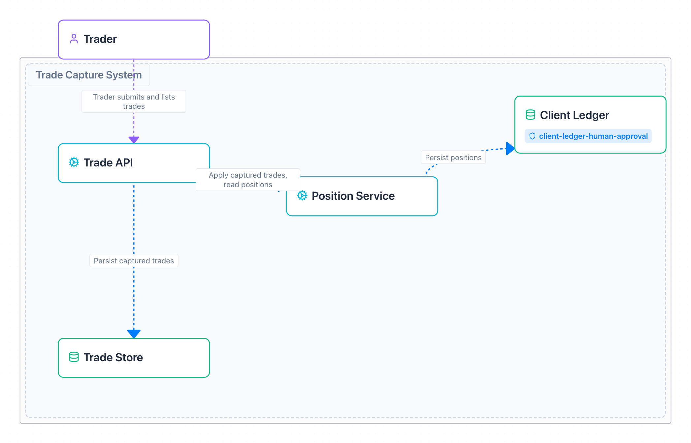
The rule on the Client Ledger
client-ledger-human-approval
"Any change to a service that connects to it needs a human approver."
It names a box, not a list of services.
Matthew. So write the architecture down as data. FINOS CALM is architecture as code: every box and every line in a file a machine can read, versioned in git next to the code. This is it in CALM Hub. And CALM lets any box carry controls, so the rule lives on the Client Ledger itself: any change to a service that connects to it needs a human approver. Look at what it doesn't say: it never names the Position Service. It names a relationship. So when the architecture changes, what the rule applies to changes with it. Remember that.
Every pull request is checked against the architecture
Pull request
from the agent
Architecture controls
which boxes? which rules?
✓ Merge
✗ Needs a person
CALM decorator
saved in CALM Hub
Rego says no. ergo says why. The check reads each rule with ergo, an open source language for explainable policies on Open Policy Agent.
Subjects every connection in the architecture Scope into the Client Ledger, from a box this change touches Checks a person approved this exact commit
Matthew. So every pull request is checked against the architecture. A check called Architecture controls works out which boxes the change touches and which rules are on them. Nothing needs a person: green, merge. Something does: blocked until a person approves, and it says why. Each decision is saved back onto the architecture in CALM Hub as a CALM decorator. The rules are read by ergo, an open source language for explainable policies on Open Policy Agent: plain policy engines say no, ergo says why. Our rule in ergo's three parts: the subjects are every connection in the architecture; the scope is connections into the Client Ledger from a box this change touches; the check is that a person approved this exact commit. Let's see it.
A real repository with the trade capture system and its architecture. The cast:
🤖 The agent calm-trade-agent writes code, opens pull requests
🔍 Review bot calm-review-bot reviews every commit
🏛️ The check Architecture controls reads the architecture
✍️ The approver @aaronsearle Aaron, live: approves when a person is needed
📐 Matthew @rocketstack-matt the architect: changes the architecture
Matthew. Live mode: switch to the browser on the repository's pull requests, with CALM Hub in a second tab. Backup: stay on the slides, every step is a screenshot; in them a demo account plays the approver. Introduce the cast. The agent is a GitHub App that writes code and opens pull requests. A review bot reviews every commit. The check, Architecture controls, reads the architecture. Aaron approves when a person is needed. And I'm the architect.
1. A harmless change live
The agent adds an endpoint to the Trade API. Green: it can merge, no person needed.
CALM Hub
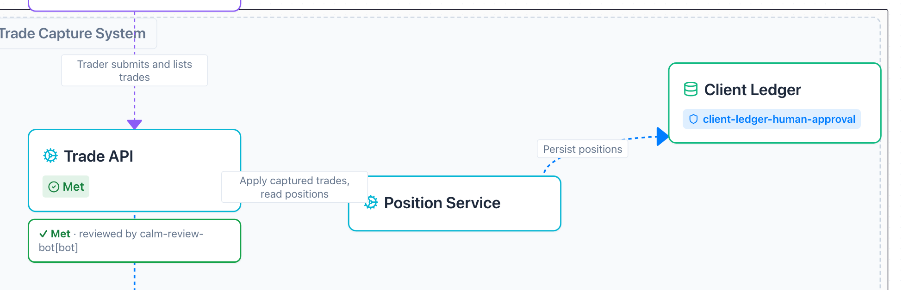
GitHub
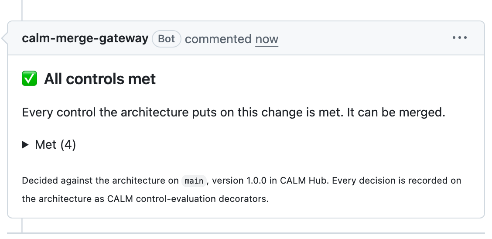
Matthew. Live: the agent opens "Account summary endpoint on trade-api". The review bot approves it. The check runs: every control met, green, and I can press Merge. CALM Hub shows the same decision on the Trade API box. This is the fast lane, and most changes should look like this.
2. A change near the ledger live
Same kind of change, on the Position Service. The code never mentions the ledger; the architecture does. Merging is blocked.
CALM Hub
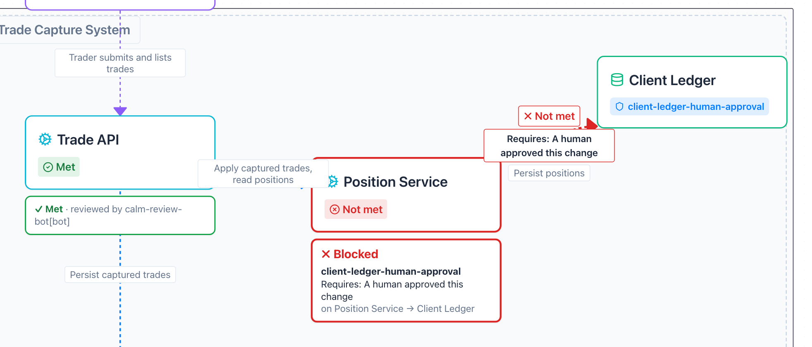
GitHub
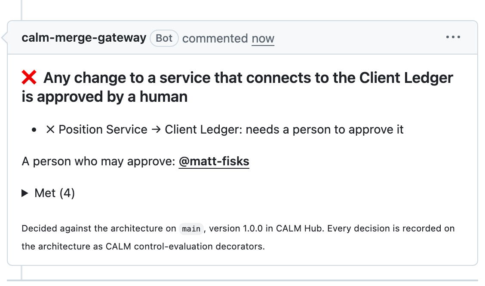
Matthew. Live: the agent opens "Position total endpoint on position-service". Same kind of change, same review bot. Red. The check says why, in words: Position Service connects to the Client Ledger, so a human must approve, and it names who can. CALM Hub shows the Position Service blocked, on the box. Nobody wrote "Position Service is risky" anywhere. The architecture did that.
3. A person approves live
The approver reads the real diff on GitHub and approves with the usual button. Green, and the approval is on the architecture.
CALM Hub
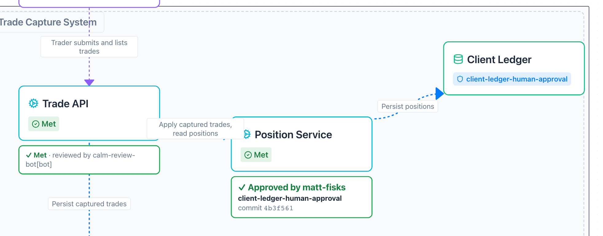
GitHub
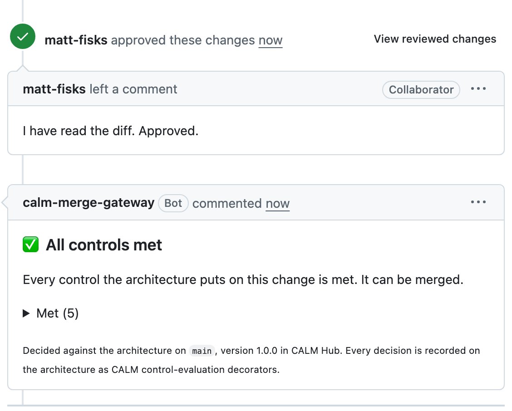
Aaron. Live: I open the pull request on my own laptop, read the actual diff, and approve with GitHub's own button. A few seconds later the check turns green, CALM Hub shows who approved which commit, and Matthew merges. Nothing new to learn: it's the review button you already use. The difference is that the architecture decided I was needed. If asked: the approval counts for that exact commit only, like GitHub's own stale-review setting, but here it is part of the rule and recorded on the architecture.
4. The shortcut live
The agent makes the Trade API read the ledger directly. That line isn't in the architecture, so it doesn't exist.
CALM Hub
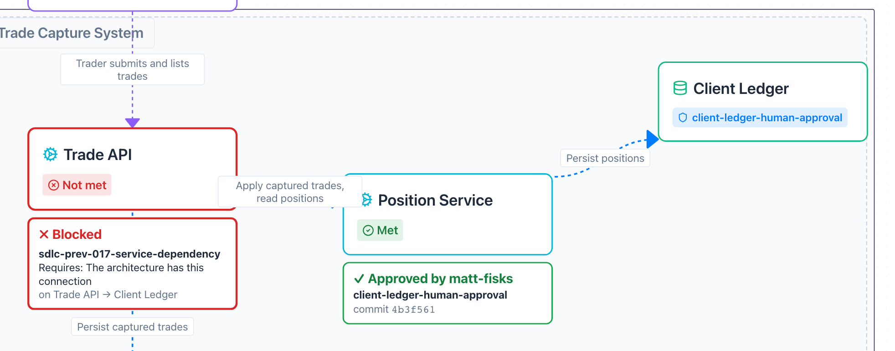
GitHub
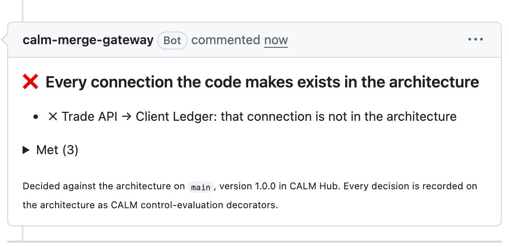
Matthew. Live: agents take the shortest path to green, so this one skips the Position Service and reads the ledger's file straight from the Trade API. Red: the architecture has no connection from Trade API to Client Ledger. If it's not in the architecture, it doesn't exist. But what if the business really needs it? The fix isn't a cleverer agent. It's an architect.
5. The architect changes the architecture live
I add one line: the Trade API may write end-of-day snapshots to the ledger. Changing the architecture needs a person too. Approved, merged: version 1.1.
CALM Hub
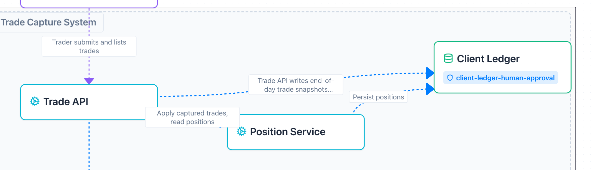
GitHub
Matthew. Live: as the architect, I open a pull request that changes the architecture file: one new relationship, the Trade API writes end-of-day snapshots to the Client Ledger. Changing the architecture is changing the rules, so it needs a person too. Approved, merged, and CALM Hub has version 1.1 with the new line. Pause. What happens to a harmless Trade API change now?
6. The same harmless change, again live
A new endpoint on the Trade API, like change 1. Now the Trade API connects to the ledger, so it needs a person.
CALM Hub
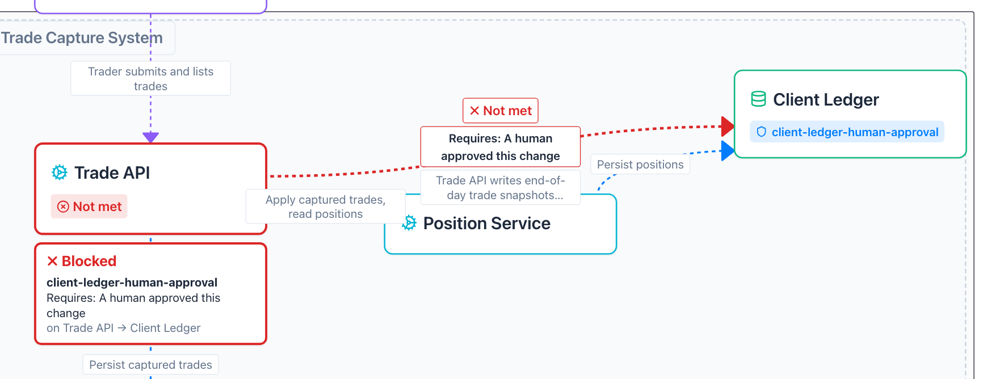
GitHub
Matthew. Live: the agent opens "Trade count endpoint on trade-api". Exactly the kind of change that went straight through at the start. Red: Trade API now connects to the Client Ledger, so a human must approve, and CALM Hub shows it on the new line. Nobody touched the rule, the check or the pipeline. Let it land.
Nobody touched the pipeline.
The architect changed the architecture, and the rule followed.
Matthew. Say it plainly. Nobody touched the pipeline, the rule, or a list of services. The architect changed the architecture, and the rule followed it. When the architecture changes, the controls follow.
ergo's report, saved on the architecture
Each decision becomes a CALM decorator : a standard way to attach facts to an architecture without editing it.
{
"type" : "control-evaluation" ,
"target" : [".../architectures/33/versions/1-1-0" ],1
"applies-to" : ["trade-api" , "trade-api-to-client-ledger" ],2
"data" : {
"control" : { "unique-id" : "client-ledger-human-approval" ,
"control-id" : "SDLC-PREV-001" },3
"status" : "not-met" ,
"findings" : [{4
"subject" : "trade-api-to-client-ledger" ,
"check" : "human_approved" ,
"description" : "A human approved this change" ,
"cause" : "absent" }],
"change" : { "commit" : "a27142e…" , "spec" : "SPEC-001" },5
"engine" : { "name" : "ergo" , "policy-sha256" : "76c558b1…" }6
}
}
Which architecture it was decided against: version 1.1 in CALM HubWhich boxes and lines it is about, so the Hub can colour themWhich rule , and the catalog control it comes fromergo's report , in its own words: what was checked, and why it failedWhich change : the exact commit and its specWhich policy decided, by its hash
Matthew. This is what goes back onto the architecture. ergo's report for the last pull request, saved as a CALM decorator: a standard way to attach facts to an architecture without editing it, so the architecture file stays the architecture. It says which version of the architecture it was decided against, which boxes and lines it's about, which rule and which catalog control, ergo's own finding in plain words, the exact commit, and the hash of the policy that decided. One per rule, per decision. It's a draft CALM Standard we're proposing, so any tool can write one and any tool can read one, and CALM Hub draws them on the diagram, as you saw.
Why it matters
Developers Most changes fly through. When one is blocked, it says why, and who can help.
Architects The diagram can't go stale, because every change is checked against it.
Risk and audit The proof writes itself: every decision, on the architecture, with who approved what.
"Regulators treat unsubstantiated controls as absent controls." SDLC Common Controls Catalog, risk SDLC-RC-005
Aaron. Why should you care? Developers get a fast lane: most changes fly through, and a blocked one says why and who can help. Architects get a diagram that can't go stale, because every change is checked against it. And for risk and audit, the proof writes itself. One line from our own catalog: regulators treat unsubstantiated controls as absent controls. Here the evidence is a by-product.
Built from open parts
What to control The SDLC Common Controls Catalog, written once by the industry.
Where it applies FINOS CALM: the architecture as code, the rules on its boxes, the decisions back on it as decorators.
How to decide An open source project that checks rules written as data and says why.
Everything you saw is real: the repository, the pull requests, the approvals, the checks and CALM Hub.
Aaron. None of this is a product. The catalog says what to control. CALM says where it applies, and holds the decisions. ergo, an open source project, decides and explains. Everything you saw was real: a real repository, real pull requests, real approvals.
Both. One ask. Pick one rule you already have. Put it on one box in your architecture. Let the architecture say no. The demo repository, the code behind it, the catalog and CALM are all open. Bring what you learn back to FINOS.
Both. Thank you. Leave the line on screen: when the architecture changes, the controls follow. Then questions.